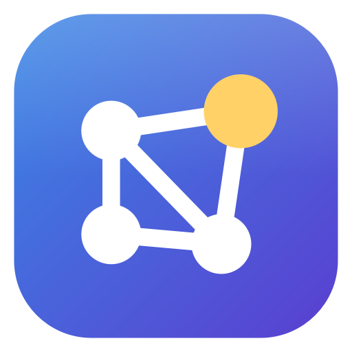
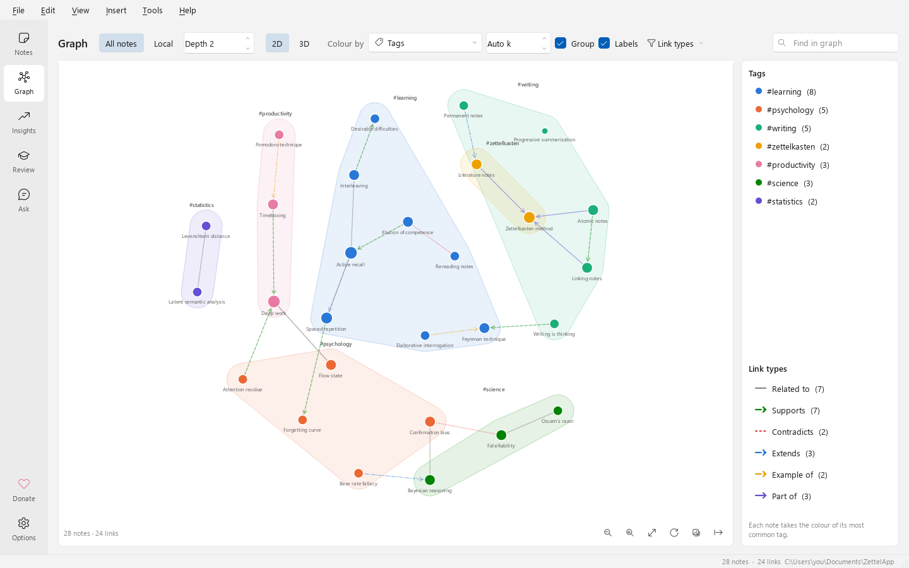
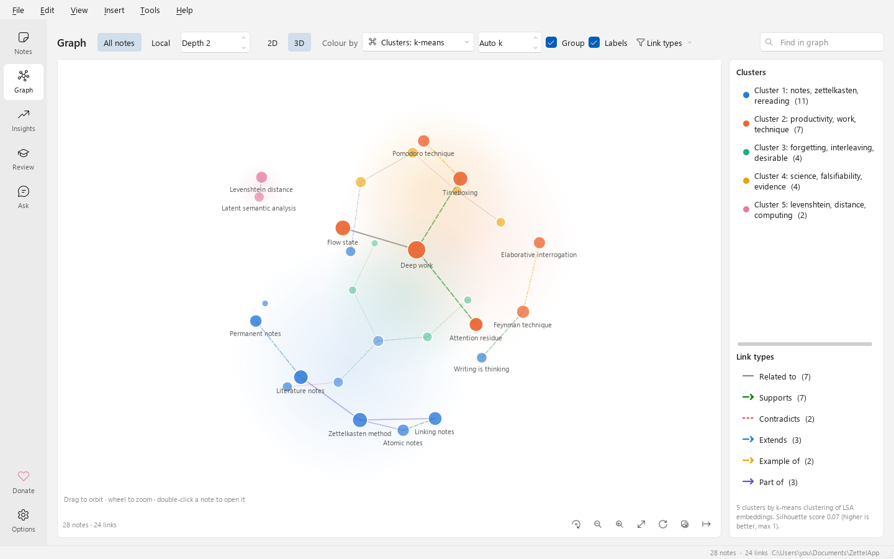
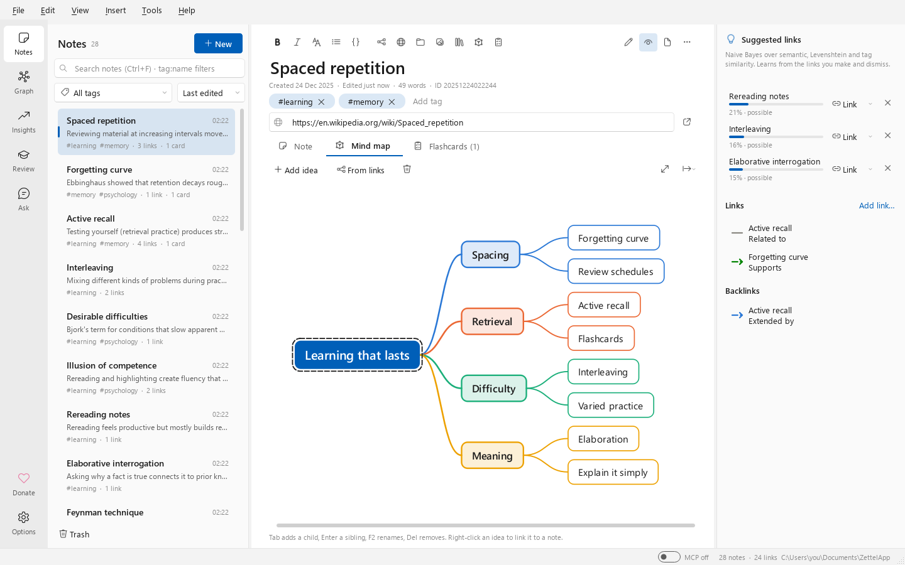
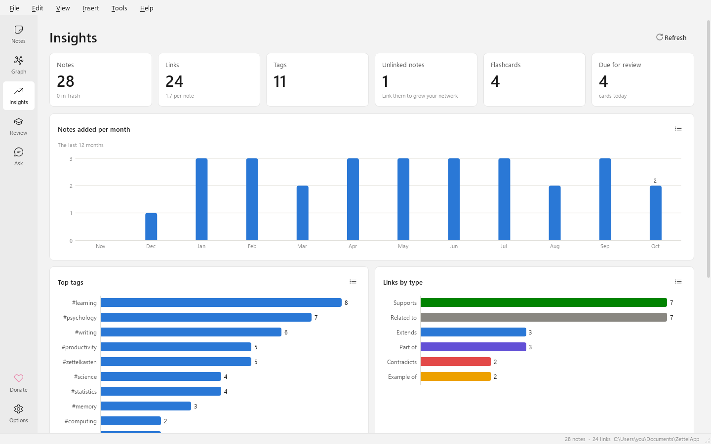
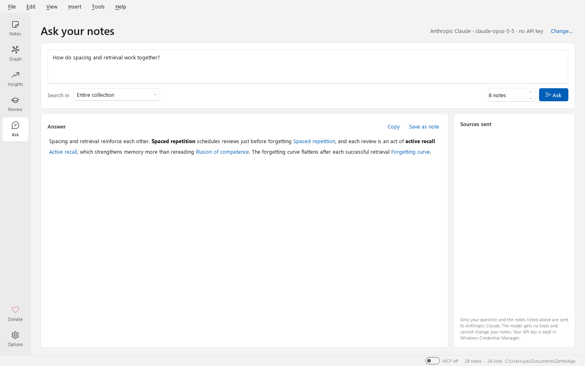

Verbinden Sie Ihre Ideen.
ZettelApp ist ein Zettelkasten für Windows. Schreiben Sie kleine Notizen, verknüpfen Sie sie mit einer Bedeutung und lassen Sie sich übersehene Verbindungen vorschlagen. Erkunden Sie Ihr Wissen als 2D- oder 3D-Graph und machen Sie daraus Lernkarten.
Kostenlos und quelloffen · Windows 10 und 11, 64-Bit · Alle Versionen und Prüfsummen

Neu beim Zettelkasten?
Lernen Sie die Methode in fünf Minuten kennen und probieren Sie sie anschließend selbst aus.
-
Die Methode
Was ist ein Zettelkasten?
Herkunft des Zettelkastens, seine Prinzipien (atomare Notizen, begründete Links, entstehende Strukturen), die drei Arten von Notizen und typische Stolperfallen.
-
Zum Ausprobieren
Tutorial starten
Ihre ersten 30 Minuten: Notizen schreiben und verknüpfen, typisierte Links, Vorschläge, Mindmaps, Lernkarten und der 2D- und 3D-Graph.
Alles, was ein Zettelkasten braucht
Eine Idee pro Notiz, verbunden durch Links, die den Zusammenhang erklären. ZettelApp bewahrt die Methode und beseitigt unnötige Hürden.
-
Atomare Notizen
Markdown-Notizen mit automatischen Zeitstempel-IDs, Tags (im Tagfeld oder als #tags im Text), einem Quellenlink, einfügbaren oder hineinziehbaren Bildern, Links zu Dateien auf Ihrem PC und automatischem Speichern.
-
Typisierte, gerichtete Links
Schreiben Sie
supports:: [[Claim]]. Widerspricht, erweitert, Beispiel für, Teil von, zitiert oder eigene Linktypen. Backlinks lesen sich natürlich: Wird unterstützt von. -
Lernende Vorschläge
Ein Naive-Bayes-Modell gewichtet semantische, Stichwort- und Zeichenkettenähnlichkeit, gemeinsame Tags und Links und lernt aus jedem Vorschlag, den Sie annehmen oder ablehnen.
-
2D- und 3D-Graph
Färben Sie Notizen nach Tags oder nach k-means- und hierarchischen Bedeutungsclustern ein und gruppieren Sie sie auf schattierten Hintergründen.
-
Mindmaps
Skizzieren Sie die Ideen einer Notiz als Mindmap mit der Tastatur, verknüpfen Sie Ideen mit Notizen und exportieren Sie das Ergebnis als PNG, SVG oder FreeMind.
-
Wiederholung und Quizfragen
Lernkarten aus
Q:/A:und{{c1::cloze}}-Text, verteiltes Wiederholen mit SM-2, Multiple Choice, eingegebene Antworten und Notiz erraten.
Linkvorschläge
Entdecken Sie übersehene Verbindungen
Während Sie schreiben, vergleicht ZettelApp die Notiz anhand von acht Merkmalen mit dem Rest Ihres Tresors:
- Bedeutung (latente semantische Analyse);
- gemeinsame Stichwörter (TF-IDF);
- Levenshtein- und Jaro-Winkler-Ähnlichkeit von Titeln und Text;
- gemeinsame Tags und Links sowie im Text erwähnte Titel.
Ein Naive-Bayes-Klassifikator wandelt diese Belege in eine Wahrscheinlichkeit um und erklärt jeden Vorschlag.
Verknüpfen Sie einen Vorschlag mit einem Klick und wählen Sie den Linktyp, oder lehnen Sie ihn ab. In beiden Fällen lernt das Modell, wie Sie Ideen miteinander verbinden.

Graph
Ihr Wissen in 2D und 3D
Erkunden Sie die gesamte Sammlung oder die Nachbarschaft einer einzelnen Notiz. Färben Sie Notizen nach Tags oder lassen Sie das Clustering Ihre Themen finden:
- k-means oder hierarchisches Clustering nach Notizbedeutung;
- automatische Wahl der Clusteranzahl anhand des Silhouettenwerts;
- Cluster, benannt nach ihren Stichwörtern.
Aktivieren Sie Gruppieren, um verwandte Notizen auf schattierten Hintergründen zusammenzuziehen. Die Farben bleiben auch bei Farbsehschwächen unterscheidbar.

Mindmaps
In Verzweigungen denken
Jede Notiz kann eine Mindmap enthalten:
- Tab fügt ein untergeordnetes Element hinzu, Enter ein gleichrangiges; mit F2 benennen Sie um;
- verknüpfen Sie jede Idee mit einer Notiz;
- erstellen Sie mit einem Klick eine Map aus den Links einer Notiz;
- exportieren Sie sie als PNG, SVG oder FreeMind.

Wiederholen
Behalten Sie im Gedächtnis, was Sie schreiben
Machen Sie aus Notizen Lernkarten und wiederholen Sie sie mit verteiltem Wiederholen nach SM-2. Sie können sich auch selbst abfragen:
- Multiple Choice;
- eingegebene Antworten, bei denen Tippfehler verziehen werden;
- Notiz erraten – falsche Auswahlmöglichkeiten sind die ähnlichsten Notizen.
Sie bevorzugen Anki? Synchronisieren Sie über AnkiConnect oder exportieren Sie ein Deck. Jede Karte verweist zurück auf ihre Notiz.

Ihre Notizen befragen
Antworten, die auf Ihren Notizen beruhen
Verbinden Sie Ihren eigenen Schlüssel mit Anthropic Claude, OpenAI oder Z.ai und stellen Sie Fragen.
- Die relevantesten Notizen werden auf Ihrem Computer gefunden.
- Nur diese Notizen werden gesendet; Sie sehen genau, welche.
- Antworten zitieren sie mit anklickbaren Links.
- Schlüssel bleiben im Windows-Anmeldeinformations-Manager.

Funktioniert mit Ihren Tools
-
Zotero
Durchsuchen Sie Ihre Bibliothek, fügen Sie Zitate ein, die den Eintrag öffnen, und beginnen Sie Literatur-Notizen mit Links zum PDF.
Zotero -
Anki
Synchronisieren Sie Lernkarten über AnkiConnect oder exportieren Sie
Anki.apkg-Decks. Eine erneute Synchronisierung aktualisiert Karten, statt Duplikate zu erstellen. -
MCP-Server
Ermöglichen Sie Claude Desktop, Claude Code und anderen MCP-Clients, den Tresor zu durchsuchen und Notizen zu lesen – nur, wenn ZettelApp geöffnet und der MCP-Schalter eingeschaltet ist. Änderungen sind nur möglich, wenn Sie sie erlauben.
MCP-Server -
Obsidian und Markdown
Importieren Sie Markdown-Ordner und Obsidian-Tresore oder exportieren Sie Notizen als Markdown-Dateien mit Frontmatter und
Importieren[[links]]. -
Alles exportieren
Exportieren Sie die gesamte Sammlung oder einen beliebigen Teilgraphen als Archiv, statische Website, JSON, GraphML, Graphviz oder Anki-Deck.
Exportieren -
Für Windows gemacht
Übernimmt das helle oder dunkle Design und die Akzentfarbe. Standardmenüs und Tastenkombinationen, Installation pro Benutzer und tägliche Sicherungen.
Erste Schritte
Von Grund auf privat und sicher
Ihre Notizen gehören Ihnen. ZettelApp funktioniert offline. Abgesehen von einer unauffälligen, deaktivierbaren Suche nach einer neuen Version beim Start verwendet die App das Netzwerk nur, wenn Sie sie dazu auffordern.
Offline zuerst
Kein Konto, keine Telemetrie, kein Tracking. Notizen liegen in einem Ordner Ihrer Wahl.
Keine aktiven Inhalte
Notizen können keine Skripte ausführen oder Inhalte aus dem Web laden. Importe werden auf Pfadmanipulationen und Dekompressionsbomben geprüft.
Schlüssel bleiben geheim
API-Schlüssel liegen im Windows-Anmeldeinformations-Manager und werden nie in Dateien oder Protokollen gespeichert.
Sicherheitsnetz
Automatisches Speichern, ein Papierkorb mit Wiederherstellung und tägliche Sicherungen aller geöffneten Tresore.
ZettelApp herunterladen
Kostenlos und quelloffen, in die Gemeinfreiheit überführt.
- System
- Windows 10 (21H2 oder höher) oder Windows 11, 64-Bit
- Installation
- Pro Benutzer, keine Administratorrechte erforderlich. Wählen Sie zu Beginn die Sprache des Installationsprogramms.
- SmartScreen
- Die Builds sind noch nicht signiert. Wenn Windows eine Warnung anzeigt, wählen Sie nach Prüfung der Prüfsumme Weitere Informationen ▸ Trotzdem ausführen.
- Quellcode
- github.com/DutraIRS/ZettelApp
Als Nächstes geplant
Weitere Sprachen
Die App und diese Seiten sind in 11 Sprachen verfügbar; weitere Übersetzungen sind willkommen.
Linux
.deb- und AppImage-Pakete.
Signierte Builds
Keine SmartScreen-Warnungen mehr.
Offline-KI
Lokale Einbettungsmodelle für noch bessere Vorschläge.
ZettelApp unterstützen
ZettelApp ist kostenlose, quelloffene Software in der Gemeinfreiheit. Wenn sie Ihnen Zeit spart oder Sie die Roadmap schneller umgesetzt sehen möchten, erwägen Sie bitte, das Projekt zu unterstützen.
Unternehmen: Mit einer Förderung kann ein bestimmter Roadmap-Punkt finanziert werden. Kontaktieren Sie uns über GitHub. Sponsoren werden in den Versionshinweisen erwähnt.